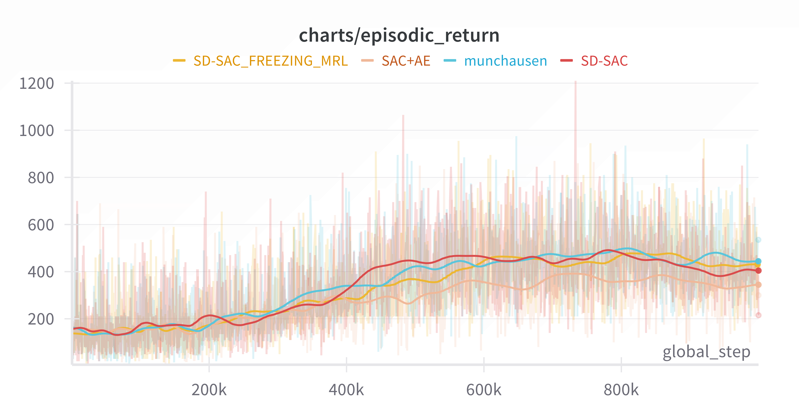
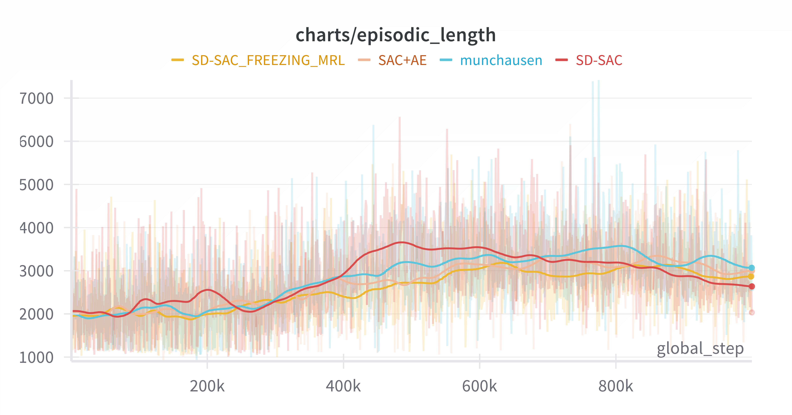

Učenie posilňovaním v doméne hier
Kontakt
Študent: Juraj Povinec (povinec5@uniba.sk)
Školiteľ: doc. Ing. Peter Lacko, PhD
Zadanie
Anotácia
Hlboké architektúry neurónových sietí preukázali schopnosť napodobňovať ľudí pri rôznych úlohách (rozpoznávanie obrazu, opis scény, alebo hranie hier). Veľký nárast výkonu grafických čipov nám umožňuje vytvárať a trénovať hlbšie a zložitejšie architektúry, ktoré zvyšujú úspešnosť umelých neurónových sietí. Učenie posilňovaním získava popularitu v doméne umelej intelligence. Stavový priestor väčšiny hier je natoľko veľký, že klasické symbolické prístupy umelej inteligencie ho nedokážu efektívne prehľadávať. Preto je zaujímavé skúmať možnosť emergencie stratégie hry pri učení posilňovaním s využitím hlbokých architektúr neurónových sietí.
Cieľ práce
Preskúmajte existujúce prístupy učenia posilňovaním a vybraný prístup aplikujte na zvolenú hru. Zamerajte sa na rýchlosť učenia a kvalitu nájdenej stratégie.
Denník
03.02.2025 - 09.02.2025
- Mal som meeting so skolitelom, kde sme prebrali plan a strukturu bp
- Zacal som citat Reinforcement learning: An introduction
- Prezeral som dalsie materialy k RL
10.02.2025 - 16.02.2025
- Pokracoval som v citani Reinforcement learning: An introduction
- Vyhladaval som frameworky, API a dalsie tools
- Vyhladaval som prace pre sekciu related work
17.02.2025 - 23.02.2025
- Pozeral som prace zo sekcie related work
- Experimentoval som s environment interfaceami
- Pisal som sekciu o environment interfaceoch
24.02.2025 - 02.03.2025
- Vytvoril som web stranku pre bakalarsky seminar
- Pokracoval som s oboznavanim sa s frameworkami a env interfaceami
- Pisal som sekciu related work
03.03.2025 - 09.03.2025
- Skumal som pokrocilejsie algoritmy
- Skusal som tieto algoritmy
10.03.2025 - 16.03.2025
- Studoval som algoritmus SD-SAC
- Hladal som implementacie SAC, ktore by som mohol pouzit ako zaklad
17.03.2025 - 23.03.2025
- Skumal som cloudove riesenia pre beh treningu agenta (MS Azure, Google Colab, Kaggle).
- Ako zaklad algoritmu som pouzil implementaciu diskretneho SACu kniznice CleanRL.
- Doplnil som do tejto implementacie navhrnute vylepsenia (SD-SAC).
- Testoval som mnou implementovane tieto vylepsenia
- Hladal som chyby v mojej implementacii tychto vylepseni
- Skumal som reward function pre hru Space Invaders v prostredi Gymnasium
24.03.2025 - 30.03.2025
- Skusal som rozne reward funkcie: default, inverse, clipped, rescaled
- Implementoval som reward wrappers: inverse, rescaled, life lost penalty
- Riesil som problemy, ktore vznikli updateom na najnovsie verzie dependencies
31.03.2025 - 06.04.2025
- Experimentoval som s nastaveniami environmentu: episodic life a life loss penalty
- Pisal som BP
07.04.2025 - 13.04.2025
- Implementoval a otestoval som paralelizaciu environmentov
- Dopisal som sekciu technicka analyza: dodatocne kniznice
- Pisal som kapitolu o zvolenej hre
- Pisal som implementacnu kapitolu
- Vytvaral som figury pre BP
- Pozeral som sa na dalsie vylepsenia: SAC + AE, SEER
14.04.2025 - 20.04.2025
- Implementoval som Munchausen RL
- Implementoval som SAC+AE
- Implementoval som SEER: freezovanie enkoderov
21.04.2025 - 27.04.2025
- Implementoval som SEER
- Dopisal som implementacnu kapitolu
28.04.2025 - 04.05.2025
- Bug fixoval som implementaciu SEER
- Pustal som experimenty
- Upravil som implementacnu kapitolu
- Dopisal som kapitolu o existujucich rieseniach
- Pisal som kapitolu o zvolenej metode
05.05.2025 - 11.05.2025
- Dopisal som sekciu o zvolenych modifikaciach algoritmu SAC
- Rozpisal som sekciu o zvolenom algoritme SAC
- Spravil som par uprav v implementacii
- Testoval som rozne konfiguracie algoritmu
- Zbieral som data z testov
12.05.2025 - 18.05.2025
- Dopisal som sekciu o algoritme
- Pisal som sekciu o vysledkoch
- Testoval som rozne konfiguracie algoritmu
- Analyzoval som data z testov
19.05.2025 - 25.05.2025
- Upravil som BP podla spatnej vazby od skolitela
- Spustal a analyzoval som posledne testy
19.05.2025 - 01.06.2025
- Dopisal som BP
02.06.2025 - 05.06.2025
- Finalne upravy
Práca


GitHub repozitar
BP
Prezentácia
Literatúra
- Richard S Sutton. Reinforcement learning: An introduction. A Bradford Book, 2018.
- Kevin Murphy. Reinforcement learning: An overview. arXiv preprint arXiv:2412.05265, 2024.
- Volodymyr Mnih, Koray Kavukcuoglu, David Silver, Andrei A Rusu, Joel Veness, Marc G Bellemare, Alex Graves, Martin Riedmiller, Andreas K Fidjeland, Georg Ostrovski, et al. Human-level control through deep reinforcement learning. nature, 518(7540):529–533, 2015.
- Christian L Martinez-Nieves. Defeating the invaders with deep reinforcement learning.
- David Silver, Guy Lever, Nicolas Heess, Thomas Degris, Daan Wierstra, and Martin Riedmiller. Deterministic policy gradient algorithms. In International conference on machine learning, pages 387–395. Pmlr, 2014.
- Matteo Hessel, Joseph Modayil, Hado Van Hasselt, Tom Schaul, Georg Ostrovski, Will Dabney, Dan Horgan, Bilal Piot, Mohammad Azar, and David Silver. Rainbow: Combining improvements in deep reinforcement learning. In Proceedings of the AAAI conference on artificial intelligence, volume 32, 2018.
- Hado Hasselt. Double q-learning. Advances in neural information processing systems, 23, 2010.
- Tom Schaul, John Quan, Ioannis Antonoglou, and David Silver. Prioritized experience replay. arXiv preprint arXiv:1511.05952, 2015.
- Ziyu Wang, Tom Schaul, Matteo Hessel, Hado Hasselt, Marc Lanctot, and Nando Freitas. Dueling network architectures for deep reinforcement learning. In International conference on machine learning, pages 1995–2003. PMLR, 2016.
- Richard S Sutton. Learning to predict by the methods of temporal differences. Machine learning, 3:9–44, 1988.
- Meire Fortunato, Mohammad Gheshlaghi Azar, Bilal Piot, Jacob Menick, Ian Osband, Alex Graves, Vlad Mnih, Remi Munos, Demis Hassabis, Olivier Pietquin, et al. Noisy networks for exploration. arXiv preprint arXiv:1706.10295, 2017.
- Marc G Bellemare, Will Dabney, and Rémi Munos. A distributional perspective on reinforcement learning. In International conference on machine learning, pages 449–458. PMLR, 2017.
- Tyler Clark, Mark Towers, Christine Evers, and Jonathon Hare. Beyond the rainbow: High performance deep reinforcement learning on a desktop pc. arXiv preprint arXiv:2411.03820, 2024.
- Petros Christodoulou. Soft actor-critic for discrete action settings. arXiv preprint arXiv:1910.07207, 2019.
- Tuomas Haarnoja, Aurick Zhou, Pieter Abbeel, and Sergey Levine. Soft actor-critic: Off-policy maximum entropy deep reinforcement learning with a stochastic actor. In International conference on machine learning, pages 1861–1870. Pmlr, 2018.
- Haibin Zhou, Zichuan Lin, Junyou Li, Qiang Fu, Wei Yang, and Deheng Ye. Revisiting discrete soft actor-critic. arXiv preprint arXiv:2209.10081, 2022.
- Lili Chen, Kimin Lee, Aravind Srinivas, and Pieter Abbeel. Improving computational efficiency in visual reinforcement learning via stored embeddings. Advances in Neural Information Processing Systems, 34:26779–26791, 2021.
- Nino Vieillard, Olivier Pietquin, and Matthieu Geist. Munchausen reinforcement learning. Advances in Neural Information Processing Systems, 33:4235–4246, 2020.
- Denis Yarats, Amy Zhang, Ilya Kostrikov, Brandon Amos, Joelle Pineau, and Rob Fergus. Improving sample efficiency in model-free reinforcement learning from images. In Proceedings of the aaai conference on artificial intelligence, volume 35, pages 10674–10681, 2021.
- The Centre for Computing History. Space invaders. https://www.computinghistory.org.uk/det/329/Space-Invaders/. Webpage describing the Atari 2600 game Space Invaders. Reference ID CH329. Accessed: 2025-04-14.
- Atari, Inc. Space Invaders Instruction Manual, 1980. Available at: https://atariage.com/manual_html_page.php?SoftwareLabelID=460. Accessed: 2025-04-14.
- M. G. Bellemare, Y. Naddaf, J. Veness, and M. Bowling. The arcade learning environment: An evaluation platform for general agents. Journal of Artificial Intelligence Research, 47:253–279, jun 2013.
- Mark Towers, Ariel Kwiatkowski, Jordan Terry, John U Balis, Gianluca De Cola, Tristan Deleu, Manuel Goulão, Andreas Kallinteris, Markus Krimmel, Arjun KG, et al. Gymnasium: A standard interface for reinforcement learning environments. arXiv preprint arXiv:2407.17032, 2024.
- Greg Brockman, Vicki Cheung, Ludwig Pettersson, Jonas Schneider, John Schulman, Jie Tang, and Wojciech Zaremba. Openai gym, 2016.
- Mathieu Poliquin. Stable retro, a maintained fork of openai’s gym-retro. https://github.com/Farama-Foundation/stable-retro, 2025.
- Marc Lanctot, Edward Lockhart, Jean-Baptiste Lespiau, Vinicius Zambaldi, Satyaki Upadhyay, Julien Pérolat, Sriram Srinivasan, Finbarr Timbers, Karl Tuyls, Shayegan Omidshafiei, et al. Openspiel: A framework for reinforcement learning in games. arXiv preprint arXiv:1908.09453, 2019.
- Jun Jet Tai, Mark Towers, and Elliot Tower. Shimmy: Gymnasium and PettingZoo Wrappers for Commonly Used Environments, June 2023.
- Antonin Raffin, Ashley Hill, Adam Gleave, Anssi Kanervisto, Maximilian Ernestus, and Noah Dormann. Stable-baselines3: Reliable reinforcement learning implementations. Journal of Machine Learning Research, 22(268):1–8, 2021.
- Shengyi Huang, Rousslan Fernand Julien Dossa, Chang Ye, Jeff Braga, Dipam Chakraborty, Kinal Mehta, and João G.M. Araújo. Cleanrl: High-quality single-file implementations of deep reinforcement learning algorithms. Journal of Machine Learning Research, 23(274):1–18, 2022.
- Awni Hannun, Jagrit Digani, Angelos Katharopoulos, and Ronan Collobert. MLX: Efficient and flexible machine learning on apple silicon, 2023.
- Tristan Billot. How fast is mlx? a comprehensive benchmark on 8 apple silicon chips and 4 cuda gpus. Towards Data Science, February 2024. Available at: https://towardsdatascience.com/how-fast-is-mlx-a-comprehensive-benchmark-on-8-apple-silicon-chips-and-4-cuda-gpus-378a0ae356a0/. Accessed: 2025-04-09.